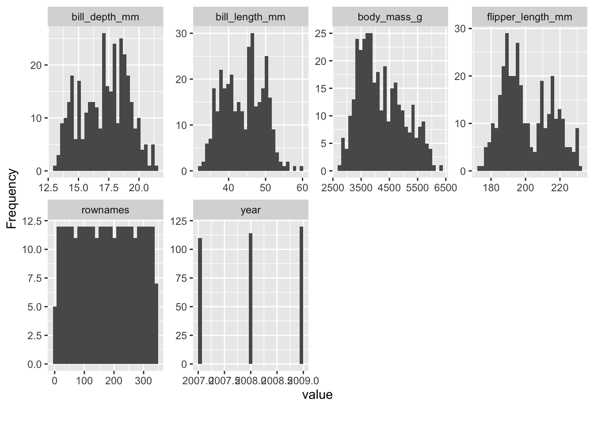
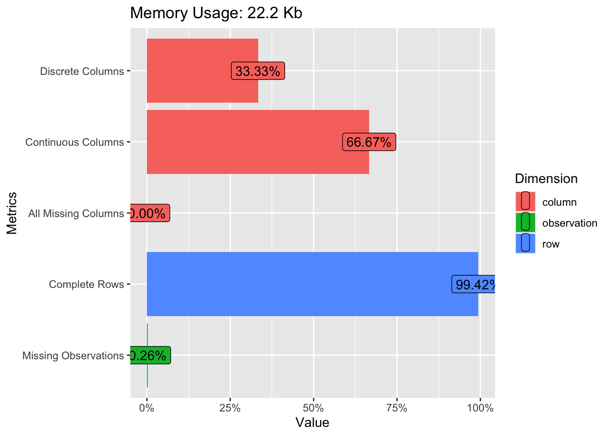
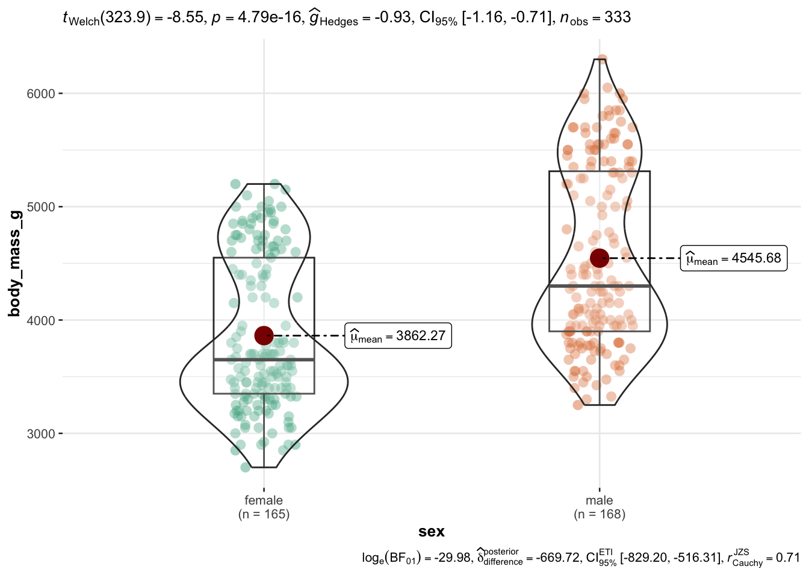

library(easystats) # make stats easy again
library(tidyverse) # data wrangling
library(tableone) # tables, optional
library(rio) # import/export data, eg., to excel
library(ggpubr) # simple data visualization
library(ggstatsplot) # data visualization ornamented with statistics2 Exploratory Data Analysis

2.1 R packages needed for this chapter
Make sure to run the following code chunks in order to start the neccessary R packages needed in this chapter.
Caution
You can only start a package if you have it installed upfront.
Check out the course Statistics1, chapter on introducing R for an accessible introduction to getting started with R and RStudio and on how to install R packages.
Note
All the R-code for each chapter can be found as pure, R-only files here. \(\square\)
Exercise 2.1 (Install the missing packages) Take a minute to install any of the packages above which are not yet installed on your machine. Hint: Click on the pane Packages and then hit the button Install. \(\square\)
2.2 What’s EDA?
Exploratory Data Analysis (EDA) is a procedure to scrutinize a dataset at hand in order learn about it. EDA comprises descriptive statistics, data visualization and data transformation techniques (such as dimension reduction).
It’s not so mathematical deep as modelling, but in practice it’s really important.
There’s this famous saying:
In Data Science, 80% of time spent prepare data, 20% of time spent complain about the need to prepare data.
EDA can roughly be said to comprise the following parts:
- Importing (and exporting) data
- Data cleansing (such as deal with missing data etc)
- Data transformation or “wrangling” (such as long to wide format)
- Computing desriptive statistics (such as the notorious mean)
- Analyzing distributions (is it normal?)
- Finding patterns in data (aka data mining)
- More complex data transformation techniques (such as factor analysis)
2.3 Data journey
Wickham & Grolemund (2016) present a visual sketch of what could be called the “data journey”, i.e., the steps we are taking in order to learn from data, seen from an hands-on angle, see Figure 2.1.

2.4 Blitz data
See Section 1.7 for some data sets suitable to get going.
2.5 Data cleansing
The R package {janitor} provides some nice stuff for data cleansing. Check out this case study.
2.6 Convenience functions
There a quite a few functions (residing in some packages) that help you doing EDA from a helicoptor point of view. In other words, you do not have to pay attention to nitty-gritty details, the function will do that for you. This is approach is, well, convenient, but of course comes at a price. You will not have a great amount of choice and influence on the way the data is analyzed and presented.
We’ll use the penguins data set for a demonstration.
penguins <- read.csv("https://vincentarelbundock.github.io/Rdatasets/csv/palmerpenguins/penguins.csv")2.6.1 Data Explorer
There are many systems and approaches to explore data. One particular interesting system is the R-package DataExplorer.

Check it out on its Githup page.
library(DataExplorer)For example, we can easily get an overview of the distribution of all (quantitative) variables in the data set. What do you notice on inspecting the distributions, see Figure 2.2?
plot_histogram(penguins)

A quick “introduction” to the data set is provided by the function plot_intro, see Figure 2.3.
plot_intro(penguins)

We can also get a glimpse on all the qualitative data columns in our datra set, see Figure 2.4.
plot_bar(penguins)
Exercise 2.2 (Visualizing mtcars using dataExplorer) Use dataExplorer in a similar way as shown above. More specifically,
- Plot histograms for all metric variables.
- Provide a visual overview on the total amount of missing data.
- Plot bar plots to visualize the distribution of all non-metric columns (variables).
2.6.2 visdat
The r package visdat provides a “fingerprint” of a data set.
Let’s show-case it using the penguins data set.
library(visdat) # must be installed
vis_dat(penguins)
Exercise 2.3 (Provide a visual fingerprint of mtcars) Use the R package visdat to provide a similar “fingerprint” as Figure 2.5 of the dataset mtcars.
2.6.3 vtree
A bit similar to {DataExplorer}, the R package {vtree} helps to explore visually datasets, see Figure 2.6.
library(vtree)
vtree(penguins, c("sex", "island"))2.6.4 TableOne
The R package {tableOne} provides something like the typical “Table 1” in many papers.
From the homepage:
The tableone package is an R package that eases the construction of “Table 1”, i.e., patient baseline characteristics table commonly found in biomedical research papers. The packages can summarize both continuous and categorical variables mixed within one table. Categorical variables can be summarized as counts and/or percentages. Continuous variables can be summarized in the “normal” way (means and standard deviations) or “nonnormal” way (medians and interquartile ranges).
penguins <- read.csv("https://vincentarelbundock.github.io/Rdatasets/csv/palmerpenguins/penguins.csv")It’s quite simple to use:
library(tableone)
CreateTableOne(data = penguins)
Overall
n 344
rownames (mean (SD)) 172.50 (99.45)
species (%)
Adelie 152 (44.2)
Chinstrap 68 (19.8)
Gentoo 124 (36.0)
island (%)
Biscoe 168 (48.8)
Dream 124 (36.0)
Torgersen 52 (15.1)
bill_length_mm (mean (SD)) 43.92 (5.46)
bill_depth_mm (mean (SD)) 17.15 (1.97)
flipper_length_mm (mean (SD)) 200.92 (14.06)
body_mass_g (mean (SD)) 4201.75 (801.95)
sex (%)
11 ( 3.2)
female 165 (48.0)
male 168 (48.8)
year (mean (SD)) 2008.03 (0.82) Note that you can get a markdown/html version by adding the command kableone.
library(tableone)
table1 <- CreateTableOne(data = penguins)
kableone(table1)| Overall | |
|---|---|
| n | 344 |
| rownames (mean (SD)) | 172.50 (99.45) |
| species (%) | |
| Adelie | 152 (44.2) |
| Chinstrap | 68 (19.8) |
| Gentoo | 124 (36.0) |
| island (%) | |
| Biscoe | 168 (48.8) |
| Dream | 124 (36.0) |
| Torgersen | 52 (15.1) |
| bill_length_mm (mean (SD)) | 43.92 (5.46) |
| bill_depth_mm (mean (SD)) | 17.15 (1.97) |
| flipper_length_mm (mean (SD)) | 200.92 (14.06) |
| body_mass_g (mean (SD)) | 4201.75 (801.95) |
| sex (%) | |
| 11 ( 3.2) | |
| female | 165 (48.0) |
| male | 168 (48.8) |
| year (mean (SD)) | 2008.03 (0.82) |
However, to get a markdown (styled) output, you need to run your script in a Quarto document, not in an R script.
To get more detailed results, use the summary method:
tab1 <- CreateTableOne(data = penguins)
summary(tab1)Check-out the TableOne manual for a more detailed introduction.
How to export to MS Office? Well, one simple approach is obviously to copy-paste (the styled version). Checkout Section 2.9 for more advanced options.
Exercise 2.4 (Create a Table 1 for mtcars) You are free to choose a more overview presentation or a more detailled one. Why did you choose your kind of presentation (overview vs. detailled)? Explain.
2.6.5 The easystats way
There are some packages, such as {easystats}, which provide comfortable access to basic statistics:
library(easystats) # once per session
describe_distribution(penguins) |> # describe all distributions in the data set
format_table(digits = 2) # show 2 decimals only| Variable | Mean | SD | IQR | Min | Max | Skewness | Kurtosis | n | n_Missing |
|---|---|---|---|---|---|---|---|---|---|
| rownames | 172.50 | 99.45 | 172.50 | 1.00 | 344.00 | 0.00 | -1.20 | 344.00 | 0 |
| bill_length_mm | 43.92 | 5.46 | 9.30 | 32.10 | 59.60 | 0.05 | -0.88 | 342.00 | 2 |
| bill_depth_mm | 17.15 | 1.97 | 3.12 | 13.10 | 21.50 | -0.14 | -0.91 | 342.00 | 2 |
| flipper_length_mm | 200.92 | 14.06 | 23.25 | 172.00 | 231.00 | 0.35 | -0.98 | 342.00 | 2 |
| body_mass_g | 4201.75 | 801.95 | 1206.25 | 2700.00 | 6300.00 | 0.47 | -0.72 | 342.00 | 2 |
| year | 2008.03 | 0.82 | 2.00 | 2007.00 | 2009.00 | -0.05 | -1.50 | 344.00 | 0 |
describe_distribution provides us with an overview on typical descriptive summaries.
How to export to MS Office? Well, one simple approach is obviously to copy-paste. Checkout Section 2.9 for more advanced options.
For nominal variables, consider data_tabulate:
data_tabulate(penguins, select = c("sex", "island")) |> # tabulate nominal variables
print_md() # stylize output| Variable | Value | N | Raw % | Valid % | Cumulative % |
|---|---|---|---|---|---|
| sex | (NA) | 11 | 3.20 | 3.20 | 3.20 |
| female | 165 | 47.97 | 47.97 | 51.16 | |
| male | 168 | 48.84 | 48.84 | 100.00 | |
| (NA) | 0 | 0.00 | (NA) | (NA) | |
| island | Biscoe | 168 | 48.84 | 48.84 | 48.84 |
| Dream | 124 | 36.05 | 36.05 | 84.88 | |
| Torgersen | 52 | 15.12 | 15.12 | 100.00 | |
| (NA) | 0 | 0.00 | (NA) | (NA) | |
Note that adding print_md at the end of your pipeline helps to get a more visually pleasing (HTML) output, and not only raw command line style output.
We can also get grouped tabulations, which amounts to something similar to a contingency table:
penguins %>%
group_by(sex) %>%
data_tabulate(select = "island", collapse = TRUE)| Variable | Group | Value | N | Raw % | Valid % | Cumulative % |
|---|---|---|---|---|---|---|
| island | sex () | Biscoe | 5 | 45.45 | 45.45 | 45.45 |
| Dream | 1 | 9.09 | 9.09 | 54.55 | ||
| Torgersen | 5 | 45.45 | 45.45 | 100.00 | ||
| (NA) | 0 | 0.00 | (NA) | (NA) | ||
| island | sex (female) | Biscoe | 80 | 48.48 | 48.48 | 48.48 |
| Dream | 61 | 36.97 | 36.97 | 85.45 | ||
| Torgersen | 24 | 14.55 | 14.55 | 100.00 | ||
| (NA) | 0 | 0.00 | (NA) | (NA) | ||
| island | sex (male) | Biscoe | 83 | 49.40 | 49.40 | 49.40 |
| Dream | 62 | 36.90 | 36.90 | 86.31 | ||
| Torgersen | 23 | 13.69 | 13.69 | 100.00 | ||
| (NA) | 0 | 0.00 | (NA) | (NA) | ||
Checkout the function reference of your favorite package in order to learn what’s on the shelf. For example, here’s the function reference site of datawizard, one of the packages in the easystats ecosystem.
Exercise 2.5 (mtcars with easystats) Check out the exercise mtcars-easystats at the Datenwerk.
2.6.6 Lab
Take your research data and prepare it using (at least) one of the “convenience” functions for data cleansing presented above.
2.7 Tidyverse

2.7.1 Intro to the tidyverse
The Tidyverse is probably the R thing with the most publicity. And it’s great. It’s a philosophy baked into an array of R packages. Perhaps central is the idea that a lot of little Lego pieces, if fitting nicely together, provides a simple yet flexible and thus powerful machinery.
There’s a lot of introductory material to the tidyverse around for instance, so I’m not repeating that here.
Exercise 2.6 (Tidyverse on the Datenwerk) There are a number of exercises related to data wrangling and Exploratory Data Analysis (EDA) using the Tidyverse methods on the Datenwerk. Feel free to check out!
2.7.2 More advanced tidyverse
2.7.2.1 Repeat a function over many columns
At times, we would like to compute the same functions for many variables, ie columns for tidyverse applications.
Let’s load the penguins data for illustration.
penguins <- read_csv("https://vincentarelbundock.github.io/Rdatasets/csv/palmerpenguins/penguins.csv")
head(penguins)| rownames | species | island | bill_length_mm | bill_depth_mm | flipper_length_mm | body_mass_g | sex | year |
|---|---|---|---|---|---|---|---|---|
| 1 | Adelie | Torgersen | 39.1 | 18.7 | 181 | 3750 | male | 2007 |
| 2 | Adelie | Torgersen | 39.5 | 17.4 | 186 | 3800 | female | 2007 |
| 3 | Adelie | Torgersen | 40.3 | 18.0 | 195 | 3250 | female | 2007 |
| 4 | Adelie | Torgersen | NA | NA | NA | NA | NA | 2007 |
| 5 | Adelie | Torgersen | 36.7 | 19.3 | 193 | 3450 | female | 2007 |
| 6 | Adelie | Torgersen | 39.3 | 20.6 | 190 | 3650 | male | 2007 |
Say, we would like to compute the mean value for each numeric variable in the data set:
penguins %>%
summarise(across(bill_length_mm:body_mass_g, mean, na.rm = TRUE))| bill_length_mm | bill_depth_mm | flipper_length_mm | body_mass_g |
|---|---|---|---|
| 43.92193 | 17.15117 | 200.9152 | 4201.754 |
Synonymously, we could write:
penguins %>%
summarise(across(where(is.numeric), ~ mean(.x, na.rm = TRUE)))| rownames | bill_length_mm | bill_depth_mm | flipper_length_mm | body_mass_g | year |
|---|---|---|---|---|---|
| 172.5 | 43.92193 | 17.15117 | 200.9152 | 4201.754 | 2008.029 |
Say, we would like to compute the z-value of each numeric variable.
Admittedly, easystats makes it quite simple:
penguins %>%
standardise(select = is.numeric) %>%
head()| rownames | species | island | bill_length_mm | bill_depth_mm | flipper_length_mm | body_mass_g | sex | year |
|---|---|---|---|---|---|---|---|---|
| -1.724511 | Adelie | Torgersen | -0.8832047 | 0.7843001 | -1.4162715 | -0.5633167 | male | -1.257484 |
| -1.714456 | Adelie | Torgersen | -0.8099390 | 0.1260033 | -1.0606961 | -0.5009690 | female | -1.257484 |
| -1.704400 | Adelie | Torgersen | -0.6634077 | 0.4298326 | -0.4206603 | -1.1867934 | female | -1.257484 |
| -1.694345 | Adelie | Torgersen | NA | NA | NA | NA | NA | -1.257484 |
| -1.684289 | Adelie | Torgersen | -1.3227986 | 1.0881294 | -0.5628905 | -0.9374027 | female | -1.257484 |
| -1.674234 | Adelie | Torgersen | -0.8465718 | 1.7464261 | -0.7762357 | -0.6880121 | male | -1.257484 |
See the help page of standardise for mor details on how to select variables and on more options.
But for the purpose of illustration, let’s do it with more standard methods, i.e. tidyverse only.
penguins %>%
transmute(across(bill_length_mm:body_mass_g,
.fns = ~ {(.x - mean(.x, na.rm = TRUE)) / sd(.x, na.rm = TRUE)},
.names = "{.col}_z")) %>%
head()| bill_length_mm_z | bill_depth_mm_z | flipper_length_mm_z | body_mass_g_z |
|---|---|---|---|
| -0.8832047 | 0.7843001 | -1.4162715 | -0.5633167 |
| -0.8099390 | 0.1260033 | -1.0606961 | -0.5009690 |
| -0.6634077 | 0.4298326 | -0.4206603 | -1.1867934 |
| NA | NA | NA | NA |
| -1.3227986 | 1.0881294 | -0.5628905 | -0.9374027 |
| -0.8465718 | 1.7464261 | -0.7762357 | -0.6880121 |
It’s maybe more succinct to put the z-value computation in a function, and then just apply this function:
z_stand <- function(x){
(x - mean(x, na.rm = TRUE)) / sd(x, na.rm = TRUE)
}d2 <-
penguins %>%
mutate(across(bill_length_mm:body_mass_g,
.fns = z_stand))
d2 %>%
glimpse()Rows: 344
Columns: 9
$ rownames <dbl> 1, 2, 3, 4, 5, 6, 7, 8, 9, 10, 11, 12, 13, 14, 15, 1…
$ species <chr> "Adelie", "Adelie", "Adelie", "Adelie", "Adelie", "A…
$ island <chr> "Torgersen", "Torgersen", "Torgersen", "Torgersen", …
$ bill_length_mm <dbl> -0.8832047, -0.8099390, -0.6634077, NA, -1.3227986, …
$ bill_depth_mm <dbl> 0.78430007, 0.12600328, 0.42983257, NA, 1.08812936, …
$ flipper_length_mm <dbl> -1.4162715, -1.0606961, -0.4206603, NA, -0.5628905, …
$ body_mass_g <dbl> -0.563316704, -0.500969030, -1.186793445, NA, -0.937…
$ sex <chr> "male", "female", "female", NA, "female", "male", "f…
$ year <dbl> 2007, 2007, 2007, 2007, 2007, 2007, 2007, 2007, 2007…Quite complicated!? Feel free to use the pre-prepared functions such as standardize. After all, what’s progress if not re-inventing the wheel but building on what has already been achieved?
2.7.2.2 Rowwise operations
For technical reasons, it’s a bit cumbersome in (base) R to compute rowwise operations. The thing is, R’s dataframes are organized as vectors of columns so it’s much easier to do stuff columnwise.
However, since recently, computing rowwise operations with the tidyverse has become simpler. Consider the following example. Say we would like to know the highest z-value for each variable we just computed, that is the highest values per individual, ie., by row in the data frame.
d2 %>%
drop_na() %>%
rowwise() %>%
mutate(max_z = max(c(bill_length_mm, bill_depth_mm, flipper_length_mm, body_mass_g))) %>%
head()| rownames | species | island | bill_length_mm | bill_depth_mm | flipper_length_mm | body_mass_g | sex | year | max_z |
|---|---|---|---|---|---|---|---|---|---|
| 1 | Adelie | Torgersen | -0.8832047 | 0.7843001 | -1.4162715 | -0.5633167 | male | 2007 | 0.7843001 |
| 2 | Adelie | Torgersen | -0.8099390 | 0.1260033 | -1.0606961 | -0.5009690 | female | 2007 | 0.1260033 |
| 3 | Adelie | Torgersen | -0.6634077 | 0.4298326 | -0.4206603 | -1.1867934 | female | 2007 | 0.4298326 |
| 5 | Adelie | Torgersen | -1.3227986 | 1.0881294 | -0.5628905 | -0.9374027 | female | 2007 | 1.0881294 |
| 6 | Adelie | Torgersen | -0.8465718 | 1.7464261 | -0.7762357 | -0.6880121 | male | 2007 | 1.7464261 |
| 7 | Adelie | Torgersen | -0.9198375 | 0.3285561 | -1.4162715 | -0.7191859 | female | 2007 | 0.3285561 |
2.7.3 Lab
Take your research data and play around using the tidyverse functions shown above.
2.8 Data visualization
Visualize your data – plots can provide insights which can’t (easily) delivered by numbers alone. See Anscombe’s Quartet.
The star on the R visualization sky is called ggplot. It probably is one of the most advanced statistical visualization package on the planet.
However, for a quick start, there are some nice wrappers on ggplot, levering the beauty of ggplot but making the making simple(r).
2.8.1 ggpubr
ggpubr is a simple yet powerful way to visualize data.
library(ggpubr) # must be installedLet’s visualize the association of bill length (see Figure 2.7) with body mass, see Figure 2.8.

ggscatter(penguins,
x = "bill_length_mm",
y = "body_mass_g",
color = "sex")Let’s improve a bit on the plot, see Figure 2.9.
ggscatter(penguins,
x = "bill_length_mm",
y = "body_mass_g",
color = "species",
shape = "species",
add = "reg.line",
xlab = "Bill length (mm)",
ylab = "Body maxx (g)",
conf.int = TRUE,
ellipse = TRUE,
cor.coef = TRUE)
Check out the manual of the function for further notice on the options.
2.8.2 ggstatsplot
In addtion, consider ggstatsplot)(https://indrajeetpatil.github.io/ggstatsplot/). Let’s use the mtcars dataset for a quick demonstration. For example, assume you would like to compare two group of cars, automatic vs. manual shifting, in terms of fuel economy. Here we go, Figure 2.10.
library(ggstatsplot)
ggbetweenstats(
data = penguins,
x = sex,
y = body_mass_g)
Checkout the manual of the function to get a handle on all the options and details.
Wait, let’s drop all missing values (NA) before we plot using drop_na(), Figure 2.11.
penguins_no_na <-
penguins |>
drop_na() # from package "tidyverse"
ggbetweenstats(
data = penguins_no_na,
x = sex,
y = body_mass_g)

2.8.3 Exercises
Exercise 2.7 (Visualize the mtcars dataset) Use the tools presented here to visualize variables of interest of the mtcars dataset. In addition, provided plots that investigate bivariate associations (i.e., potential correlations between two variables).
Check out a possible solution at the Datenwerk.
Exercise 2.8 (Visualize the penguins dataset) Use the tools presented here to visualize variables of interest of the penguins dataset. In addition, provided plots that investigate bivariate associations (i.e., potential correlations between two variables).
Check out a possible solution at the Datenwerk.
2.8.4 Lab
Take your research data and play around using the visualization functions shown above.
2.9 Exporting to Office
2.9.1 Word
2.9.1.1 Basic approach
It’s no big deal to get it into Word processors as well. Here’s one simple way:
- Open a Quarto-Document in RStudio
- produce some nice table
- copy and paste it to Word
Here’s an example of producing a nice table:
library(easystats) # once per session only
describe_distribution(penguins) |> print_md()| Variable | Mean | SD | IQR | Range | Skewness | Kurtosis | n | n_Missing |
|---|---|---|---|---|---|---|---|---|
| rownames | 172.50 | 99.45 | 172.50 | (1.00, 344.00) | 0.00 | -1.20 | 344 | 0 |
| bill_length_mm | 43.92 | 5.46 | 9.30 | (32.10, 59.60) | 0.05 | -0.88 | 342 | 2 |
| bill_depth_mm | 17.15 | 1.97 | 3.12 | (13.10, 21.50) | -0.14 | -0.91 | 342 | 2 |
| flipper_length_mm | 200.92 | 14.06 | 23.25 | (172.00, 231.00) | 0.35 | -0.98 | 342 | 2 |
| body_mass_g | 4201.75 | 801.95 | 1206.25 | (2700.00, 6300.00) | 0.47 | -0.72 | 342 | 2 |
| year | 2008.03 | 0.82 | 2.00 | (2007.00, 2009.00) | -0.05 | -1.50 | 344 | 0 |
Note that print_md() will “prettify” your output – if you render a Quarto document. It will not show up nicely in a pure R document. Without this line, your output will look more command-line-nerdy style.
2.9.1.2 Additional ways
In addition, one user gave the following recommendation on StackOverflow:
Another possible solution: The above strategy did not work for me when I had a similar issue, but it was resolved once I knitted the table1 object and opened the html in browser to copy the html table and successfully paste into word. Doing it within RStudio viewer would not work for me for some reason.
Lastly, there are options to export directly to Word or Powerpoint. The R package {flextable} provides functions for that purpose, see Table 2.11:
library(flextable)
my_flex_tab <- flextable(head(penguins))
my_flex_tabrownames | species | island | bill_length_mm | bill_depth_mm | flipper_length_mm | body_mass_g | sex | year |
|---|---|---|---|---|---|---|---|---|
1 | Adelie | Torgersen | 39.1 | 18.7 | 181 | 3,750 | male | 2,007 |
2 | Adelie | Torgersen | 39.5 | 17.4 | 186 | 3,800 | female | 2,007 |
3 | Adelie | Torgersen | 40.3 | 18.0 | 195 | 3,250 | female | 2,007 |
4 | Adelie | Torgersen | 2,007 | |||||
5 | Adelie | Torgersen | 36.7 | 19.3 | 193 | 3,450 | female | 2,007 |
6 | Adelie | Torgersen | 39.3 | 20.6 | 190 | 3,650 | male | 2,007 |
Just save it to the Office format of your choice:
save_as_docx("Table 1 " = my_flex_tab, path = "my_tab.docx")
save_as_pptx("Table 1 " = my_flex_tab, path = "my_tab.pptx")2.9.2 Excel
2.9.2.1 Just save your data to disk
The most straightforward approach is to convince your EDA function to produce a data frame. Data frames can be written as CSV or XLSX to disk, and then easily imported to office packages.
easystats and tidyverse are two examples where this happens.
library(easystats) # must be installed
df1 <- describe_distribution(mtcars)Now, df1 is a data frame:
str(df1)Classes 'parameters_distribution', 'see_parameters_distribution' and 'data.frame': 11 obs. of 10 variables:
$ Variable : chr "mpg" "cyl" "disp" "hp" ...
$ Mean : num 20.09 6.19 230.72 146.69 3.6 ...
$ SD : num 6.027 1.786 123.939 68.563 0.535 ...
$ IQR : num 7.53 4 221.53 84.5 0.84 ...
$ Min : num 10.4 4 71.1 52 2.76 ...
$ Max : num 33.9 8 472 335 4.93 ...
$ Skewness : num 0.672 -0.192 0.42 0.799 0.293 ...
$ Kurtosis : num -0.022 -1.763 -1.068 0.275 -0.45 ...
$ n : int 32 32 32 32 32 32 32 32 32 32 ...
$ n_Missing: int 0 0 0 0 0 0 0 0 0 0 ...
- attr(*, "object_name")= chr "mtcars"
- attr(*, "threshold")= num 0.1Let’s export as XLSX (via the R package rio) and as CSV:
library(rio) # must be installed
export(df1, file = "df1.xlsx")
export(df1, file = "df1.csv")For exporting csv files we could alternatively use write_csv() from the tidyverse or write.csv from base R. Then, checkout the file in Excel. Note that it is possible to import CSV files to Excel.
df2 <- data_tabulate(mtcars$am)
str(df2)Classes 'datawizard_table' and 'data.frame': 3 obs. of 6 variables:
$ Variable : chr "mtcars$am" "mtcars$am" "mtcars$am"
$ Value : Factor w/ 2 levels "0","1": 1 2 NA
$ N : int 19 13 0
$ Raw % : num 59.4 40.6 0
$ Valid % : num 59.4 40.6 NA
$ Cumulative %: num 59.4 100 NA
- attr(*, "type")= chr "numeric"
- attr(*, "object")= chr "mtcars$am"
- attr(*, "duplicate_varnames")= logi [1:3] FALSE TRUE TRUE
- attr(*, "total_n")= int 32
- attr(*, "valid_n")= int 32export(df2, file = "df2.csv")2.9.2.2 More advanced
Note that if we use data_tabulate like this:
df3 <- data_tabulate(mtcars, select = c("am", "vs"))
df3 %>% str()List of 2
$ :Classes 'datawizard_table' and 'data.frame': 3 obs. of 6 variables:
..$ Variable : chr [1:3] "am" "am" "am"
..$ Value : Factor w/ 2 levels "0","1": 1 2 NA
..$ N : int [1:3] 19 13 0
..$ Raw % : num [1:3] 59.4 40.6 0
..$ Valid % : num [1:3] 59.4 40.6 NA
..$ Cumulative %: num [1:3] 59.4 100 NA
..- attr(*, "type")= chr "numeric"
..- attr(*, "varname")= chr "am"
..- attr(*, "object")= chr "am"
..- attr(*, "duplicate_varnames")= logi [1:3] FALSE TRUE TRUE
..- attr(*, "total_n")= int 32
..- attr(*, "valid_n")= int 32
$ :Classes 'datawizard_table' and 'data.frame': 3 obs. of 6 variables:
..$ Variable : chr [1:3] "vs" "vs" "vs"
..$ Value : Factor w/ 2 levels "0","1": 1 2 NA
..$ N : int [1:3] 18 14 0
..$ Raw % : num [1:3] 56.2 43.8 0
..$ Valid % : num [1:3] 56.2 43.8 NA
..$ Cumulative %: num [1:3] 56.2 100 NA
..- attr(*, "type")= chr "numeric"
..- attr(*, "varname")= chr "vs"
..- attr(*, "object")= chr "vs"
..- attr(*, "duplicate_varnames")= logi [1:3] FALSE TRUE TRUE
..- attr(*, "total_n")= int 32
..- attr(*, "valid_n")= int 32
- attr(*, "class")= chr [1:2] "datawizard_tables" "list"
- attr(*, "collapse")= logi FALSE
- attr(*, "is_weighted")= logi FALSEWe’ll get a list of two data frames.
To export either, we need to access each list list element:
export(df3[[1]], file = "df3.csv")2.9.3 Lab
Take your research data, produce some nice tables and figures and import them into a word file.
2.10 Case Studies
2.10.1 Data Wrangling
2.10.1.1 Penguins

Explore the palmerpenguins dataset, it’s a famous dataset made for learning data analysis.
There’s a great interactive course on EDA based on the penguins. Have a look, it’s great!
{kind=link}
2.10.2 More Case studies
- Rebekka Barter’s introduction to the tidyverse
- Case study on the visualization of flight delays
- Advanced case study on one hit wonders
- Visualization covid cases
- Case study on nominal data: Survival on the Titanic
- Inspiration for own project: Visualize Covid-19 cases from this source.
2.11 Exercises
🧑🎓 I want more!
👨🏫 Check-out all exercises from Datenwerk with the tag datawrangling.
Tip
Use the translation function of your browers to translate the webpage into your favorite language.
2.12 Cheatsheets
There are a number of nice cheat sheets available on an array of topics related to EDA, made available by the folks at RStudio.
Consider this collection:
{kind=link}
{kind=link}
{kind=link}
{kind=link}
So much great stuff! A bit too much to digest in one go, but definitely worthwhile if you plan to dig deeper in data analysis.
2.13 Going further
Check-out the chapter on data vizualization of my intro stats book to get an overview on data viz techniques. Please use your browser’s translation feature to render the webpages into your favorite language. More on summary statistics (i.e., descriptive statistics) can be found in the same book in this chapter.
Wickham & Grolemund (2016) is an highly recommendable resource in order to get a thorough understanding of data analysis using R. Note that this source is focusing on the “how to”, not so much to theoretical foundations. Ismay & Kim (2020) is a gently introduction into many steps on the data journey, including EDA. For a gentle introduction to Data visualization, see ModernDive Chap. 2 (Ismay & Kim, 2020), and get the R code here. Similarly, for data wrangling, see ModernDive Chap. 3, and get the R code here.
Don’t forget to install it before you use it.↩︎